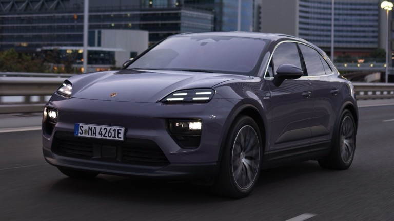

The History of Porsche
From the cobbled streets of Stuttgart to the legendary racetracks of the world, the Porsche
story is one of innovation, passion, and an unwavering pursuit of automotive excellence. It
all began in 1931, when Professor Ferdinand Porsche, a visionary engineer with a long list
of accomplishments under his belt, established his design firm. His first project, the Auto
Union Grand Prix car, laid the foundation for Porsche's future - a future defined by
performance, precision, and cutting-edge technology.
World War II temporarily shifted the focus, with Porsche contributing to the war effort.
However, the embers of ambition never truly died. In 1948, Ferdinand's son, Ferry Porsche,
unveiled the Porsche 356, a nimble sports car that captured the hearts of drivers worldwide.
Its lightweight design, nimble handling, and air-cooled flat-four engine became synonymous
with the Porsche spirit - a spirit that balanced everyday practicality with thrilling
performance.
Over the decades, Porsche continued to push boundaries. The iconic 911, introduced in 1963,
became the quintessential sports car, evolving through generations while retaining its core
essence. Models like the 917 dominated racetracks, showcasing Porsche's engineering prowess
and competitive spirit. And let's not forget the boxster and cayman, mid-engined marvels
that brought Porsche's DNA to a wider audience.
However, Porsche isn't just about sports cars. The Cayenne, introduced in 2002, marked the
brand's foray into the SUV segment, proving that practicality and performance could coexist
seamlessly. The Panamera followed, blurring the lines between luxury sedan and sports car,
and the Macan further established Porsche as a force to be reckoned within the SUV market.
Today, Porsche stands at the forefront of automotive innovation. The Taycan, their first
all-electric sports car, marks a bold step into the future, proving that electrifying
performance doesn't have to be a compromise. With the Macan EV on the horizon and continued
advancements in hybrid and electric technology, Porsche is leading the charge towards a
sustainable future without sacrificing the driving experience that has made them legendary.
The Porsche story is far from over. It's a testament to a company that dares to dream, defy
expectations, and push the boundaries of what's possible. With a rich heritage, a relentless
pursuit of excellence, and a commitment to sustainable innovation, Porsche continues to
capture the imaginations and hearts of drivers around the world. The next chapter is sure to
be just as thrilling as the last, and one thing is certain: the Porsche legend will continue
to inspire generations to come.
-
Porsche Taycan Lineup
The iconic Porsche brand has taken a bold step into the future with the Taycan,
a stunning all-electric sports car that shatters the mold of traditional EVs. Gone
are the days of quiet, eco-conscious compromises; the Taycan roars
(metaphorically, of course) with the spirit of a true Porsche, offering exhilarating
acceleration, razor-sharp handling, and a luxurious interior that wouldn't feel out
of place in a gas-powered stablemate. With its lightning-fast charging capabilities
and impressive range, the Taycan proves that zero emissions can seamlessly coexist
with pulse-pounding performance. Whether carving through winding roads or gliding
silently through cityscapes, the Taycan delivers a driving experience that's both
sustainable and electrifying. More than just a car, the Taycan represents a paradigm
shift for Porsche, demonstrating their commitment to innovation and a future where
cutting-edge technology doesn't compromise the thrill of the drive. So buckle up, the
revolution is here, and it's arriving in the form of a Porsche unlike any other - the
Tycan.
-
Porsche Macan EV Lineup
The Porsche Macan, a beloved compact SUV for driving enthusiasts, is about to get a
jolt of electric excitement. Porsche is revving up for the release of the Macan EV,
bringing its signature performance and luxury into the zero-emission arena. Buckle
up for a future where everyday practicality seamlessly blends with thrilling
electric power. While details are still under wraps, we can expect the Macan EV to
inherit the spirit of its gasoline-powered sibling. Imagine the exhilarating
acceleration and precise handling you love, now delivered with the whisper-quiet
efficiency of an electric powertrain. Porsche promises not to compromise on
performance, ensuring the Macan EV remains a joy to drive on any road.
Beyond the electric heart, the Macan EV will likely retain the sleek design and
luxurious interior that have made the Macan a popular choice. Spaciousness and
versatility will be key, catering to active lifestyles and weekend adventures.
Whether charging up for urban commutes or embarking on spontaneous getaways, the
Macan EV promises to be a capable and stylish companion.
The Porsche Macan EV is more than just a new car; it's a statement. It signifies
Porsche's commitment to sustainable performance, proving that electrifying driving
doesn't mean sacrificing the thrill of the ride. Stay tuned, as the future of the
compact luxury SUV segment is about to get a whole lot more exciting, courtesy of the
Porsche Macan EV.
